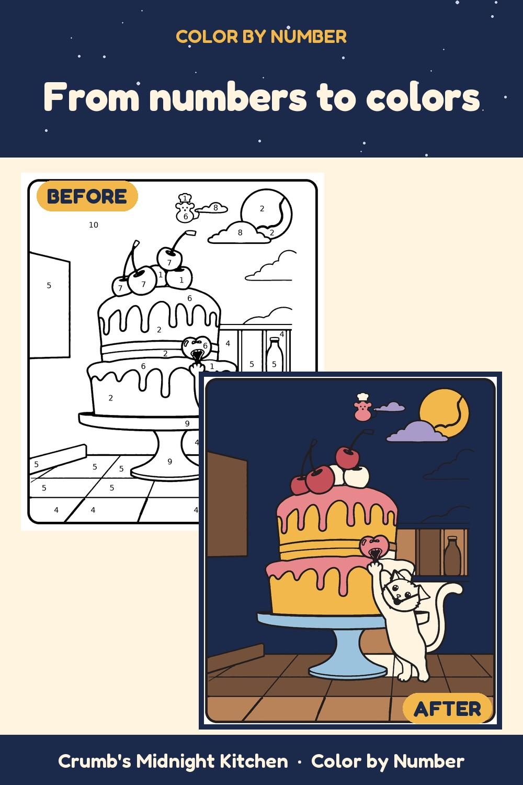

From numbers to colors
Watch a numbered page turn into a cozy colored scene. Design 11 from Crumb's Midnight Kitchen, a color by number book for kids: bold, easy shapes, clear numbers and one 12-color key.
Crumb's Midnight Kitchen: Color by Number has 40 cozy designs from a bakery that only opens after dark, with bold shapes, clear numbers and one 12-color key. Crumb, a tiny mouse in a chef hat, hides on every page.